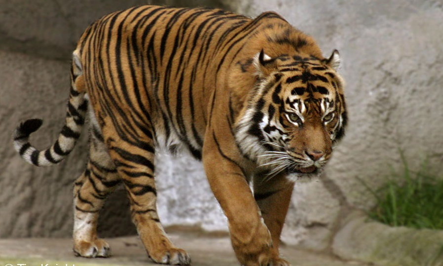

Harimau Sumatera memiliki nama latin Panthera tigris sumatrae. Harimau Sumatera merupakan hewan endemik pulau Sumatera, sehingga hanya bisa ditemui di Pulau Sumatera saja. Mereka adalah salah satu dari 6 subspesies harimau yang sampai saat ini masih ada di bumi. Namun populasi mereka saat ini berada dalam status critically endangered. Diperkirakan populasi harimau Sumatera di alam bebas saat ini hanya ada sekitar 400 ekor. Mereka adalah predator utama dalam rantai makanan di wilayahnya, sehingga mereka menjaga populasi mangsa mereka di alam liar agar keseimbangan rantai makanan di wilayahnya tetap terjaga. Namun sepertinya manusia sudah merusaknya. Habitat Harimau Sumatera (hutan dataran rendah, lahan gambut, dan hutan hujan pegunungan) semakin menyempit akibat pembukaan lahan baru oleh manusia. Sehingga terkadang harimau-harimau ini harus mencari mangsa sampai ke pemukiman warga dan harus mati dibunuh warga yang merasa terancam. Selain itu perburuan liar yang mengincar bagian-bagian tubuh mereka untuk dijual dipasar gelap sebagai perhiasan, bahan obat tradisional, atau jimat membuat populasi mereka semakin menurun drastis. Populasi Harimau Sumatera di Provinsi Riau yang konon merupakan rumah bagi 33% populasi Harimau Sumatera di alam liar pun semakin menurun. Meski sudah dilindungi oleh Undang-Undang, dalam 25 tahun terakhir, populasi mereka tetap menurun, bahkan hingga 70%. Ciri-ciri Harimau Sumatera yang paling mudah dilihat antara lain yaitu, warna kulit mereka merupakan yang paling gelap diantara semua spesies harimau. Warna bulu mereka mulai dari kucing kemerah-merahan hingga oranye tua. Harimau Sumatera merupakan spesies harimau yang bertubuh paling kecil jika dibandingkan dengan spesies harimau lainnya. Tinggi Harimau Sumatera hanya mencapai 60 cm, dengan berat badan mencapai 140 kg. Sementara berat tubuh betinanya hanya sampai 91 kg.